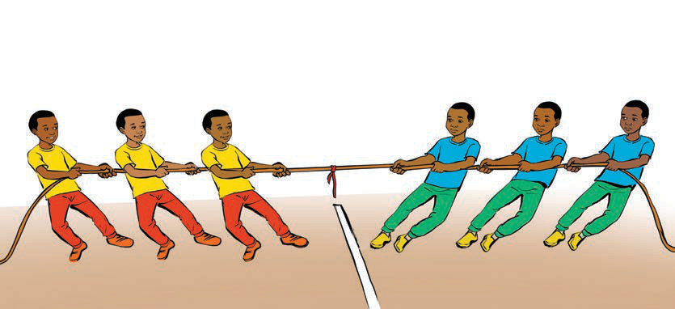

Kielelezo namba 9: Timu zikiwa tayari kuvuta kamba
3. Njia ya kupata mshindi:
(a)Timu inayoweza kuvuta kamba na kuisogeza timu pinzani kuvuka mstari wa katikati, inatangazwa mshindi.
(b)Mara nyingine, mchezo huchezwa kwa raundi zaidi ya moja, na timu inayoshinda raundi nyingi zaidi hupewa ushindi wa jumla.
Mbinu za kushinda mchezo
(a)Ushirikiano wa timu.Kushirikiana na kupanga mbinu ya kuvuta kwa pamoja badala ya kila mtu kuvuta kivyake.
(b)Kupanga wachezaji kwa mpangilio mzuri.Baadhi ya wachezaji hupangwa kimbinu mbele, katikati na nyuma ili kutoa usaidizi mkubwa kwa timu.Mfano, wachezaji wenye nguvu zaidi huweza kuwekwa mbele, katikati na nyuma.
(c)Kushika kamba kwa uimara.Wachezaji wanapaswa kushika kamba kwa nguvu na kuweka mikono karibu na mwili ili kupata uthabiti.
(d)Kutumia mguu mmoja kama nguvu ya msingi.Wachezaji wanapaswa kuweka mguu mmoja nyuma ili kusimama imara na kupata nguvu za kuvuta, kama inavyoonekana katika Kielelezo namba 10.
(e)Kujilinda dhidi ya kuteleza.Kuvaa viatu vinavyotoa ukinzani mzuri na ardhi kunasaidia kuzuia kuteleza.